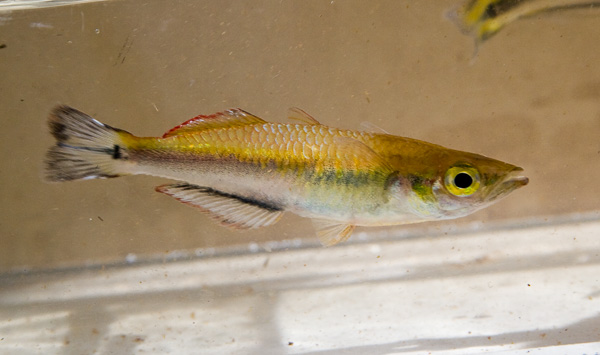

Bedotia sp nov 'Manombo' occurs in waters within Réserve Spéciale de Manombo
26km
south of the coastal city of Farafangana along RN-12. This species is considered Critically
Endangered due to anthropogenic changes in the
surrounding environment exacerbated by the narrow distribution range.

Bedotia leucopteron occurs in the middle reaches of Rianila River basin in
eastern Madagascar. Type locality is Sandrakatrana Stream at Ampasimbe Village, Toamasina
Province.
This undescribed species of Bedotia is found on the eastern aspect of Madagascar,
in coastal rivers north of Toamasina. Referred to in IUCN reports as Bedotoa sp. nov. 'Betampona'.

Bedotia albomarginata is found in the Mananara and Reinana river basins on the
Eastern aspect of Madagascar. Type specimens were collected from the Sahapindra River near the towns
of Vondrozo and Vevembe.

Rheocles vatosoa is found in the Lokoho river basin of northern Madagascar. The
Lokoho River drains the southern half of the Marojejy Massif into the Indian Ocean.

Rheocles alaotrensis occurs in Lake Alotra, Maningory River system; Anjozorobe and
in the tributaries of Betsikiboka on the west slope of Madagascar.